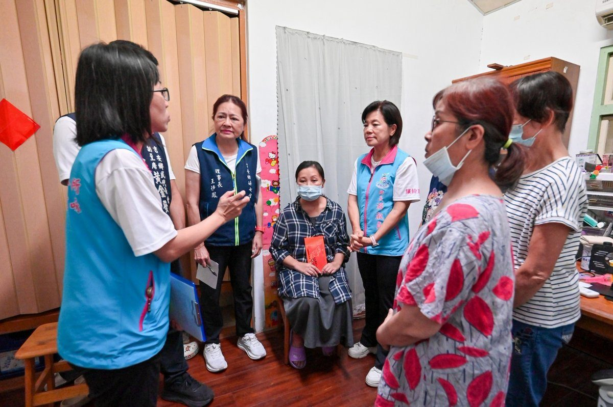
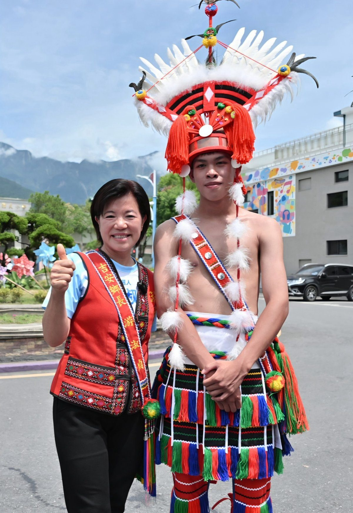
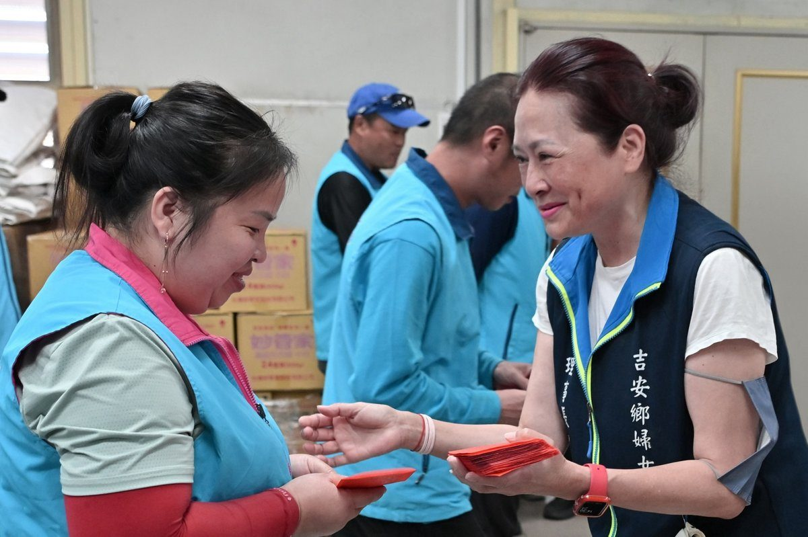
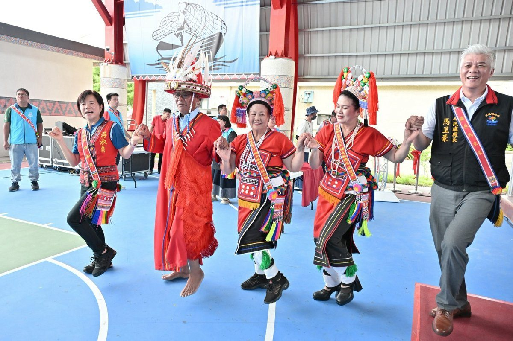

吉安鄉公所嚴懲酒駕，副主任請辭獲准
吉安鄉公所針對吳姓副主任酒駕事件，強硬表態「零容忍」立場，其本人已主動請辭獲准。鄉長游淑貞強調公務員應以身作則，呼籲全民共同遵守交通法規，杜絕酒駕行為，保障用路人生命安全。…
閱讀全文 →吉安鄉公所針對吳姓副主任酒駕事件，強硬表態「零容忍」立場，其本人已主動請辭獲准。鄉長游淑貞強調公務員應以身作則，呼籲全民共同遵守交通法規，杜絕酒駕行為，保障用路人生命安全。…
閱讀全文 →
花蓮慈濟醫院兒科病房於父親節前夕舉辦特別活動，讓住院病童與家長共同創作，感受節慶溫暖。活動中融入防蚊與戲水安全衛教，提升親子健康意識，期盼孩子們在關懷中安心度過暑假。…
閱讀全文 →
花蓮縣吉安鄉仁和社區自主防災成果亮眼，114年度再度榮獲水患自主防災社區評鑑優等殊榮，連三屆肯定其整備、宣導與應變能力。吉安鄉長游淑貞強調凝聚共識、跨域合作，打造更具韌性的鄉城。…
閱讀全文 →
花蓮慈濟醫院推出「正念社會處方箋」，結合門診與深度方案，引導長者培養覺察力、建立健康習慣。透過八週課程，陪伴長者走出孤獨，重塑身心韌性，在花蓮社區中找回生活笑容，促進人際連結與整體福祉。…
閱讀全文 →
可樂電子報小編/編輯 「115年舞墨書藝聯展暨專輯發表會」即日起至8月20日於吉安好客藝術村盛大展出。此次展覽 […]…
閱讀全文 →
吉安鄉宜昌國小擊鼓隊在全國「客鼓鳴心－鼓王爭霸戰」中脫穎而出，勇奪學生組鼓王、社會組亞軍及特優。吉安鄉長游淑貞特別前往祝賀，肯定學校在鼓藝教育的卓越成就，強調將持續支持學子多元藝能發展，傳承地方文化。…
閱讀全文 →
花蓮慈濟醫院於秀林鄉水源部落推出「社會處方箋」計畫，結合原住民族文化與社區資源，透過培力在地照顧服務員，打造專屬部落的健康促進模式，旨在提升居民生活品質與整體福祉。…
閱讀全文 →
吉安鄉公所舉辦慶生暨績優員工表揚活動，鄉長游淑貞肯定83位壽星與15位績優員工的付出，強調公所致力於營造友善職場。此次活動展現吉安鄉在各項評比中屢獲肯定的成果，並重申未來將持續提升施政品質，為鄉親提供更優質的公共服務。…
閱讀全文 →
吉安鄉公所在鄉長游淑貞的帶領下，以卓越的廉能治理和智慧施政，榮獲法務部第4屆「透明晶質獎」實地評核。公所推出「QR Code智慧門牌」、殯葬服務數位化等創新措施，展現基層鄉鎮與都會區無異的治理品質，為鄉親建構更值得信賴的…
閱讀全文 →
吉安鄉公所於原住民族日舉辦文化傳承與表揚活動，鄉長游淑貞強調土地、語言與歷史為文化根基，致力於推動保留地權益保障、族語復振及文化治理。活動不僅頒發土地權狀，更表揚族語學習家庭，展現吉安鄉對原住民族文化深耕與族群共榮的決心…
閱讀全文 →
吉安鄉長游淑貞積極推動原住民族土地正義，四年內成功核發近500張原住民保留地所有權狀。鄉公所嚴謹審查每案，確保族人土地權益穩固，促進多元族群共榮，實踐土地正義與文化傳承。…
閱讀全文 →
吉安鄉林姓婦人因重大車禍導致視力嚴重受損，家庭經濟陷入困境。吉安鄉長游淑貞主動介入，不僅致贈急難紓困金，更媒合蘋果、張榮發、全聯等公益團體提供後續協助，展現公私協力守護弱勢的愛心與力量。…
閱讀全文 →
吉安鄉PATAKUS報訊為阿美族豐年祭揭開序幕，鄉長游淑貞邀請各界共同參與，體驗部落深厚文化與世代傳承。今年吉安鄉將舉辦多場祭儀及聯合豐年節，歡迎民眾走入部落感受原民魅力。…
閱讀全文 →
花蓮縣吉安鄉路平升級工程獲顯著成效，鄉長游淑貞親率團隊進行工程Quality Check。透過重新鋪設瀝青混凝土，提升道路平整度和安全性，展現縣、鄉、村三方合作成果，打造更安全、舒適的通行環境。…
閱讀全文 →
吉安鄉長游淑貞應邀出席花蓮美育交流學會聯展，50位藝術家80件多元作品齊聚客家文化會館。本次展覽涵蓋書法、國畫、西畫及應用美術，展現花蓮藝文底蘊，並宣示藝術融入生活、豐富心靈的願景。…
閱讀全文 →
花蓮吉安鄉鄉長游淑貞熱情迎接日本北海道釧路町青少年大使團，兩地青年互動熱絡，不僅參訪宜昌國中與好客藝術村，更體驗文化與品嚐農特產品，深化台日情誼與教育合作，拓展國際視野。…
閱讀全文 →
可樂電子報小編/編輯 來自馬來西亞的大同書院一行三十六位師生，日前參訪吉安鄉慈雲山懷恩 […]…
閱讀全文 →
可樂電子報小編/編輯 父親節前夕，鄉長游淑貞特別到吉安鄉清潔隊，除祝福隊員們父親節快樂 […]…
閱讀全文 →花蓮中山路與建國路口科技執法自8月1日起轉型，改為偵測「汽機車未停讓行人」。此舉旨在全面提升行人通行安全，尤其在路口優化改建後，將更精準保障行人路權，維護交通秩序。…
閱讀全文 →
吉安鄉仁安部落聚會所正式啟用，鄉長游淑貞親臨見證，象徵部落發展新里程碑。此據點將活絡文化交流與社區凝聚，促進族人返鄉共榮，開啟地方建設新篇章。…
閱讀全文 →